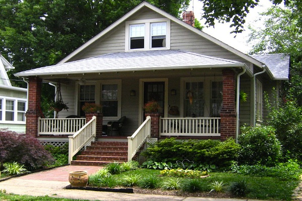

Welcome To House Scanners
Being a family owned and operated company, we're truly focused on your family's needs. Allow us to introduce our team of professionals and get to know us a little better!

Quality Home Inspections
If you're looking for a quality home inspection with reliable and accurate information about the property you are purchasing or selling, House Scanners is the right choice.
Environmental Analysis
Need a well water analysis? How about a radon test? House Scanners offers many additional environmental analysis options that you may need before your closing date.